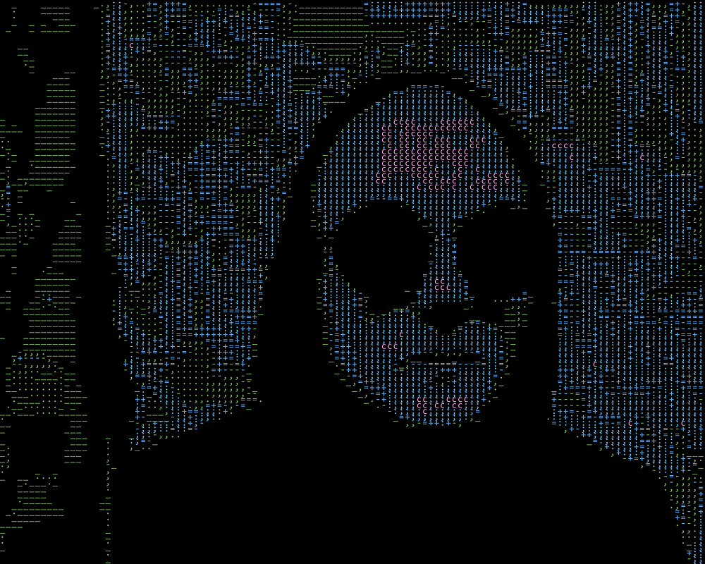

Привет. Меня зовут Алексей. Дизайном в интернете (и не только), я занимаюсь с 2009 года. Первыми проектами были группы ВКонтакте. Ещё в те далёкие годы я работал с вики разметкой и дизайнил меню для групп в контакте. Потом пошли сайты, интернет маркетинг, SEO, наружная реклама, афиши мероприятий, флаеры, доготипчики и многое другое. Тогда у меня не было профильного образования. Все макеты я создавал опираясь на внутреннее чувство того как всё должно быть, уроки в интернете, советы друзей и актуальные тренды. В связи с этим, я даже не особо заморачивался о том, чтобы собирать портфолио. Сейчас я занимаюсь дизайном и разработкой сайтов имея профессиональное образование, реальный опыт работы и портфолио. В этом блоге я собираюсь рассказывать о дизайне, о своей жизни и обо всём подряд. Надеюсь эта информация будет полезна для вдохновения и сможет помочь тем, кто интересуется веб-дизайном как с технической стороны, так и с творческой.